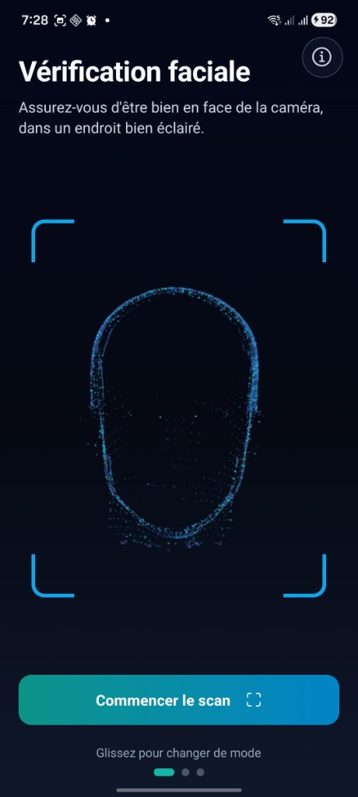
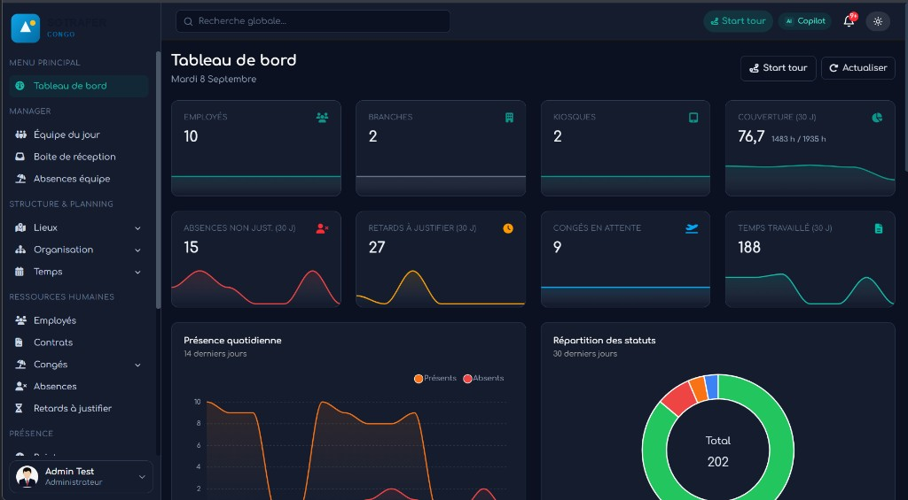
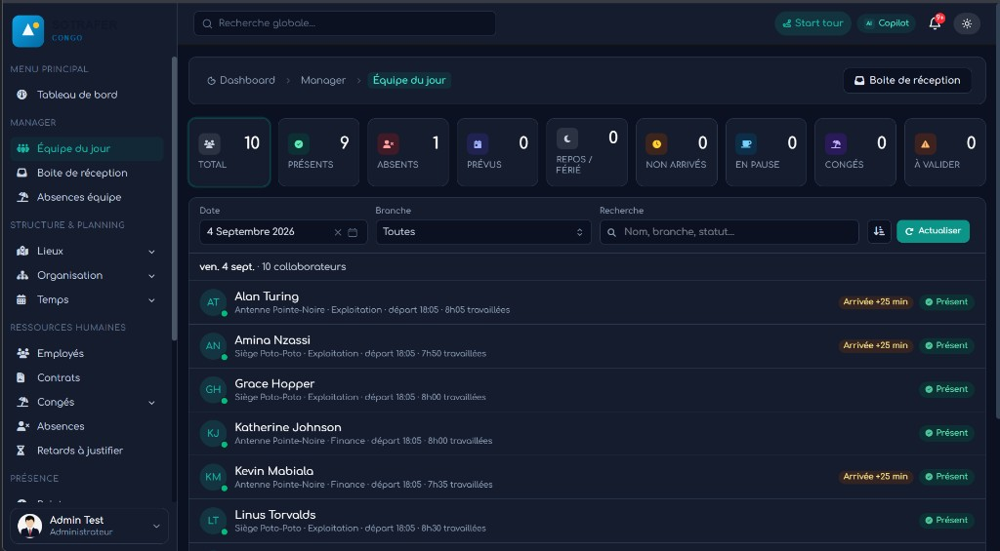
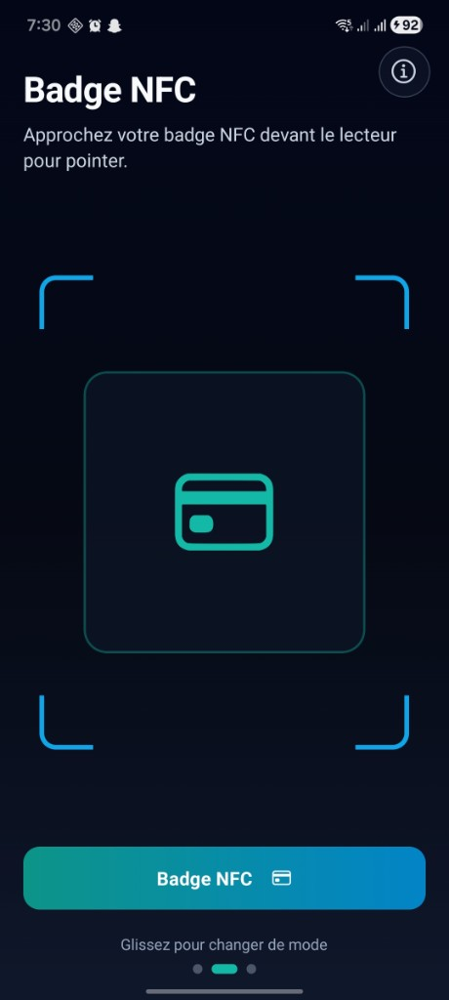
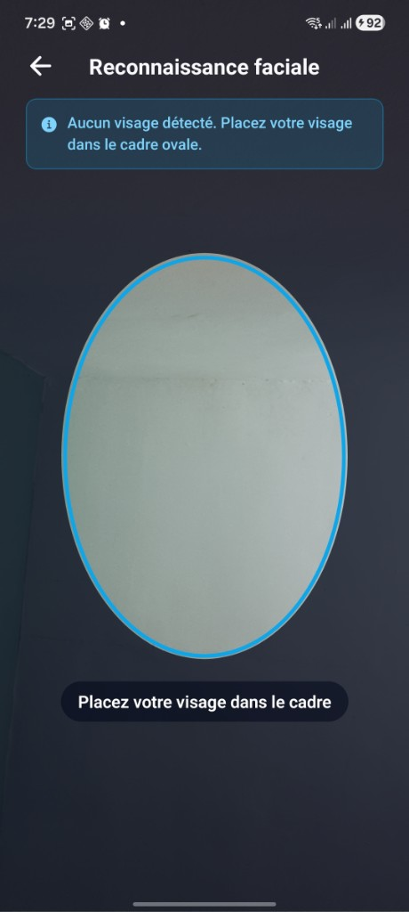
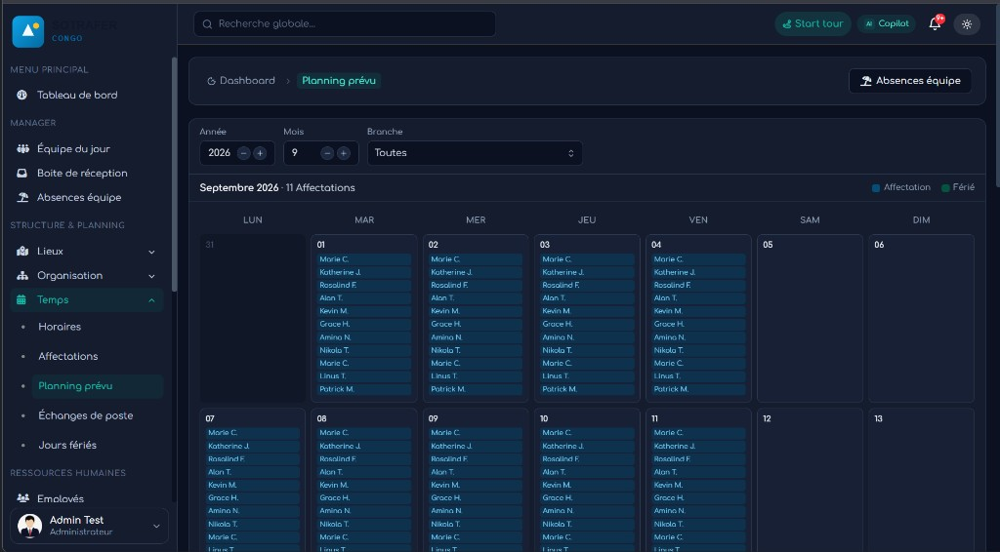
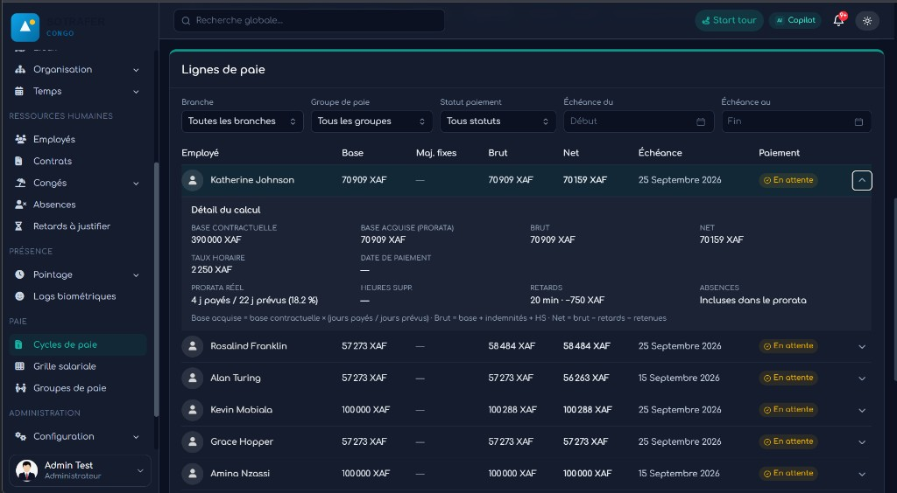

La promesse



Du pointage fiable à la préparation de la paie, dans un seul outil
Styve Maba · Septembre 2026
Projet accompagné par Mazala Firm
Qui est vraiment au travail aujourd’hui ?
Pas qui a signé le registre, ni qui a emprunté le badge d’un collègue : qui est présent maintenant, et comment ces présences deviennent congés, planning et rémunération sans tout ressaisir.

TimeGate transforme le pointage en infrastructure opérationnelle RH.
Kiosk sur téléphone ou tablette. Dashboard pour la direction et les RH. App employé pour l’équipe. Un copilote IA branché sur les données métier.


Pas de borne propriétaire : un téléphone ou une tablette suffit. Hors-ligne avec resynchronisation. Multi-sites. On commence petit, puis on élargit.
Ce n’est pas un concept. C’est un produit à essayer.
Entrée au kiosk. Équipe du jour et validations sur le dashboard. Congés, swaps et réclamations depuis l’app. Questions métier au copilote. En fin de cycle, les temps préparent la rémunération.

Une personne réelle, au bon endroit, au bon moment.
Biométrie protégée : contrôle d’accès, journaux d’audit, appareils de confiance.

Le pointage ne reste pas isolé : il alimente planning, congés, validations et suivi des équipes.
Multi-sites, shifts, prévu / réalisé, demandes et soldes de congés. Moins de ressaisie, plus de discipline opérationnelle.

Les temps réels alimentent la préparation de la rémunération : prorata, retards, heures supplémentaires, variables et avances.
TimeGate prépare les données. La paie réglementaire reste du ressort du système ou du processus de paie de l’entreprise.
Le copilote IA interroge équipe, anomalies et masse salariale en langage naturel.

Une V1 opérationnelle, conçue pour évoluer avec les usages terrain.
Les premiers déploiements et retours utilisateurs guideront les prochaines évolutions du produit.
Pointage → Présence → Planning → Congés → Anomalies → Timesheets → Préparation de rémunération → IA
Une démo de 15 minutes suffit pour parcourir le cycle complet.
Styve Maba · TimeGate
kaiserstyve2@gmail.com · +242 06 515 23 74
timegate-one.vercel.app
Projet accompagné par Mazala Firm
Disponible pour démonstration. Recherche de 2 organisations pilotes (30 jours).